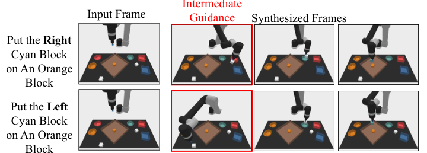
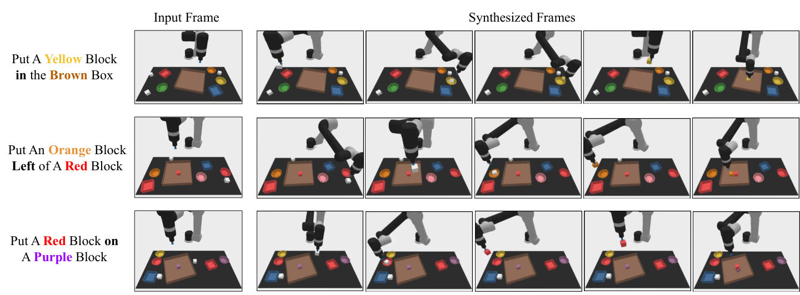
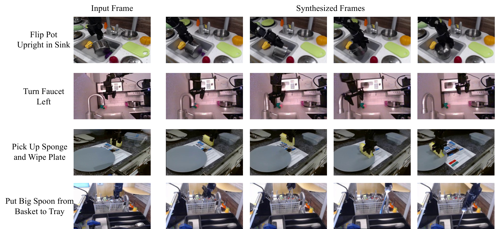
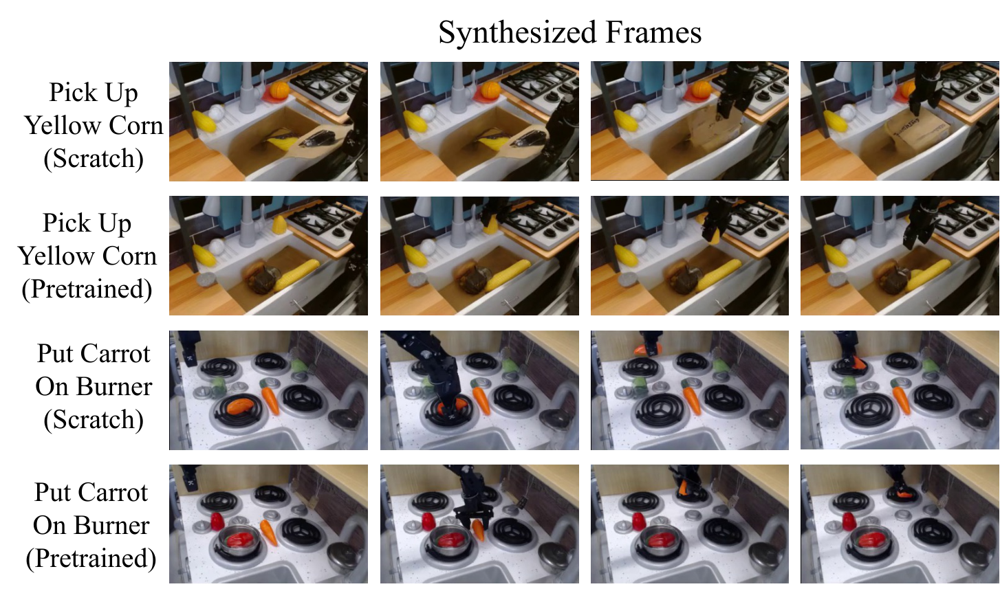
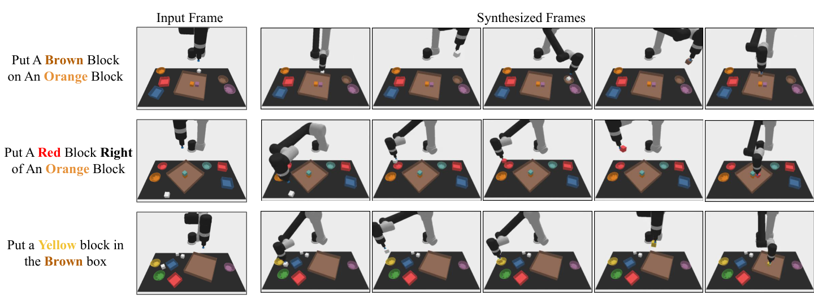
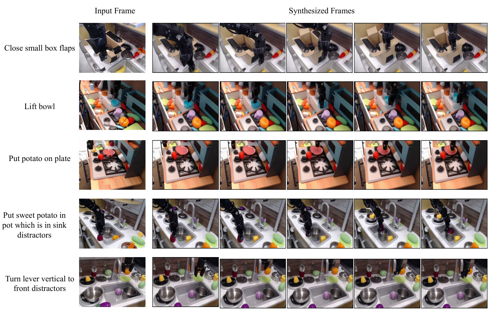

Learning Universal Policies via Text-Guided Video Generation
1. Quick overview of the paper
| quick review questions | concise answer |
|---|---|
| What should the paper solve? | Traditional RL/imitation learning strategies are usually bound to the definition of states, actions, and rewards in a certain environment, making it difficult to reuse knowledge across tasks, environments, and data sources; what this paper wants to solve is how to construct a more general language-conditional decision-making strategy. |
| The author's approach | Use text as a general target interface and image/video as a general state and plan interface: first use a text conditional video diffusion model to generate a future visual plan, and then use a task-specific inverse dynamics model to convert the video plan into actions. |
| most important results | In combined robot planning, UniPi reaches $46.1\pm3.0$ on the novel relation task, which is significantly higher than the $9.6\pm1.7$ of the strongest baseline; it is also better than the control setting in CLIPort new task migration and real robot video generation. |
| Things to note when reading | Don't understand UniPi as a "universal robot policy that directly outputs actions". Its versatility is mainly at the video planning layer, and the actual action still relies on the task/robot-specific inverse dynamics model; therefore, when reading experiments, it is necessary to distinguish between the generalization ability of the planner and the adaptation ability of the action adapter. |
Difficulty rating: ★★★★☆. You need to be familiar with diffusion models, offline reinforcement learning/imitation learning, language-conditioned robot operations, video generation models and some model predictive control ideas.
Keywords: text-conditioned video generation, universal policy, diffusion model, inverse dynamics, combinatorial generalization, robot manipulation.
Core contribution list
- Proposed policy-as-video/UniPi.The paper writes sequential decision making as a text-conditional video generation problem, using video trajectories as the planning space and text as the task specifications.
- Proposed Unified Predictive Decision Process (UPDP).UPDP replaces the environment-specific state, reward, and dynamics models in MDP with image space, textual description, and conditional video generators.
- Separate general planning from task-specific execution.The video diffusion model is responsible for generating visual plans, and the inverse dynamics model is responsible for inferring actions from adjacent images or planned trajectories.
- Demonstrate three types of generalization.Including combined language target generalization, multi-environment task transfer, and transfer to real robot video plans using Internet video pre-training.
- The appendix gives details of reproducible training.Includes Video U-Net, T5-XXL prompt embedding, 1.7B parameter video model, 2M steps, batch size 2048, 256 TPU-v4, inverse dynamics network and PyBullet environment details.

2. Motivation
2.1 What problem should be solved?
The paper focuses on general intelligence: whether an agent can reuse knowledge in many tasks and many environments. Language and vision models have shown zero-shot/combinatorial generalization capabilities, but traditional control methods are usually bound to the state space, action space and reward function of the specific environment.
Specific to robot operation, different tasks may have different objects, different goals, different action semantics, and even different data sources. Directly learning an action-space policy often requires all environments to share comparable state and action interfaces; in reality, MuJoCo's joint states, Atari's pixels, and real robot videos are not the same object.
2.2 Where are the existing methods stuck?
The paper breaks down the abstract problem of MDP into three points:
- Lack of unified state interface across environments.Different control environments have different state spaces, and unified encoding will become a complex tokenization problem.
- Explicit reward functions are difficult to migrate.RL is often defined as maximizing cumulative reward, but it is difficult to design the same reward for cross-environment tasks.
- Dynamic models depend on the environment and action space.$s$ and $a$ in $T(s'|s, a)$ are environment-specific and difficult to share across robot morphologies or tasks.
Therefore, the author changed the goal from "learning a strategy that directly outputs actions" to "learning a model that can generate future visual plans." Text describes the task, images/videos carry state changes, and actions are only recovered at the end by a small inverse dynamics model.
2.3 High-level solution ideas of this article
UniPi's pipeline is:
The key intuition of this design is that language is naturally suitable for combinatorial goals, images/videos are naturally readable across environments, and inverse dynamics can be left to be learned individually for each specific robot or environment.
4. Formalization of the problem
4.1 From MDP to UPDP
MDP is usually written as a combination of states, actions, transfers, rewards and other objects. The alternative abstraction proposed in this article is called Unified Predictive Decision Process (UPDP), defined as:
This definition puts "planning" on the image sequence and "goal" on the text.
$$\mathcal{G} = \langle \mathcal{X}, \mathcal{C}, H, \rho\rangle$$| $\mathcal{X}$ | Image viewing space. All environments can be projected as images or video frames. |
| $\mathcal{C}$ | Text task description space, use natural language to express goals, and avoid manual reward design. |
| $H$ | limited horizon. |
| $\rho(\cdot|x_0, c)$ | Conditional video generator, given an initial image and a task text, outputs a distribution of a sequence of $H$-step images in the future. |
Let $\tau=[x_1, \ldots, x_H]\in\mathcal{X}^H$ represent the future image sequence. UPDP's planner $\rho(\tau|x_0, c)$ doesn't output actions directly, but instead synthesizes "future videos that look like a completed task."
4.2 Trajectory conditional action strategy
In order to put the video plan on the action, the paper defines trajectory-task conditioned policy:
It outputs a $H$ step action sequence distribution based on complete image trajectories and text tasks. Intuitively, $\rho$ is responsible for imagining the target trajectory, and $\pi$ is responsible for explaining "how to make the robot achieve this trajectory."
The training scenario is offline RL/imitation-style: there is empirical data $\mathcal{D}=\{(x_i, a_i)_{i=0}^{H-1}, x_H, c\}_{j=1}^n$ from which the video generator and inverse dynamics policy are estimated.
4.3 Diffusion Models for UPDP
The paper instantiates $\rho(\tau|x_0, c)$ using the video diffusion model. The unconditional diffusion model first defines the forward noise adding process:
| $\tau$ | Clean video trajectories, i.e. sequences of future images. |
| $\tau_k$ | The noise adding trajectory under the $k$th noise intensity. |
| $\alpha_k, \sigma_k^2$ | The scaling factor and variance of the predefined noise schedule. |
| $s(\tau_k, k)$ | The denoising model learned during reverse generation. |
The conditional version of denoiser is written as $s(\tau_k, k|c, x_0)$, that is, each step of denoising looks at the task text and initial image. The paper also uses classifier-free guidance:
Here $\omega$ controls the conditional boot strength. The larger $\omega$ is, the more likely the sampling will be to satisfy text and initial frame conditions; if it is too strong, naturalness or diversity may be sacrificed.
5. Detailed explanation of method

5.1 Two modules
A text- and initial frame-conditioned video diffusion model. It outputs a sequence of future frames and acts as a task-agnostic planner.
An inverse dynamics model. It reads the generated video trajectories and infers the actions in the current robot/environment action space.
5.2 Conditional video synthesis: why the initial frame must be conditionalized
Ordinary text-to-video models generate open-domain videos from text only; but the control plan must start from the real current state. The paper compared the solution of "fixing the first frame only at test-time" and found that subsequent frames easily deviate from the initial scene. Therefore, the author explicitly uses the first frame as a conditional input during training, allowing the model to learn to "complete the task starting from this specific state."
5.3 Maintain trajectory consistency through tiling
The control scene requires that the same environmental state remains consistent in the video. For example, objects, robots and backgrounds on the desktop cannot drift randomly in subsequent frames. The paper reuses the temporal super-resolution video diffusion architecture, but copies the conditioned initial observation image along the time dimension as additional context when denoising each future frame.
In implementation, each noisy frame performs channel-wise concatenation with the corresponding initial frame context. This is equivalent to letting the model repeatedly see "what the real environment looks like" throughout the entire sampling process, thereby reducing the deviation of the video plan from the actual state.
5.4 Hierarchical planning
Long horizon high-dimensional control makes it difficult to generate all the details at once. UniPi first generates a coarse video that is sparse in time, representing key stages; it then uses temporal super-resolution to interpolate and refine in the time dimension to obtain a denser executable plan. This corresponds to the coarse-to-fine hierarchy in traditional planning.
The ablation in the table shows that after adding temporal hierarchy, the Relation task is upgraded from $39.4\pm2.8$ to $53.2\pm2.0$, indicating that fine-grained video planning is particularly important for complex spatial relationship tasks.
5.5 Behavioral modulation during testing
The paper points out that a prior $h(\tau)$ can be combined during sampling to impose external constraints on the generated video trajectory. For example, use an image classifier to constrain a certain state in the plan, or specify an intermediate frame as Dirac delta to make the plan pass through a specific state. This allows UniPi to change plan preferences without retraining.

5.6 Inverse dynamics and execution
Given the generated video $\{x_h\}_{h=0}^H$, the inverse dynamics model predicts the action sequence $\{a_h\}_{h=0}^{H-1}$. The paper shows that inverse dynamics training is independent of the planner and can be completed with smaller, action-labeled data sets.
There are two execution methods: closed-loop regenerates a new plan at each step or every few steps, similar to MPC; open-loop directly executes the one-time inferred action sequence sequentially. All experiments in this paper use open-loop for computational efficiency.

5.7 Training and implementation details in appendix
| components | Configuration | Source |
|---|---|---|
| Video U-Net | 3 residual blocks; 512 base channels; channel multiplier [1, 2, 4]; attention resolutions [6, 12, 24]; attention head dimension 64; conditioning embedding dimension 1024. | Appendix A.1 |
| Noise schedule | log SNR range [-20, 20]. | Appendix A.1 |
| text encoding | T5-XXL, 4.6B parameters, used to handle input prompts. | Appendix A.1 |
| Simulation task video model | first-frame conditioned video diffusion: 10x48x64, skip every 8 frames, 1.7B parameters; temporal super-resolution: 20x48x64, skip every 4 frames, 1.7B parameters. | Appendix A.1 |
| Real world video model | finetune 16x40x24 (1.7B), 32x40x24 (1.7B), 32x80x48 (1.4B), 32x320x192 (1.2B) temporal super-resolution models. | Appendix A.1 |
| diffusion training | 2M steps; batch size 2048; learning rate 1e-4; 10k linear warmup; 256 TPU-v4 chips. | Appendix A.1 |
| inverse dynamics network | Input image, predict 7-dimensional controls of simulated robot arm; 3x3 conv + 3 residual conv layers + mean pooling + MLP(128, 7). | Appendix A.2 |
| inverse dynamics training | Adam; gradient norm clipped at 1; learning rate 1e-4; 2M steps; first 10k steps linear warmup. | Appendix A.2 |
6. Experiments and results
The paper uses three sets of experiments to evaluate UniPi: combinatorial policy synthesis, multi-environment migration, and real-world migration. The focus of the evaluation is not on the optimal control of a single environment, but on whether "video as a unified strategy space" brings generalization.
6.1 Combinatorial Policy Synthesis
Experimental setup
The task comes from PDSketch combinatorial robot planning. The robot needs to operate the blocks according to language instructions, such as "put a red block right of a cyan block". Completing the task usually includes: picking up the white square, putting it into a bowl for dyeing, and then moving the square to the designated plate to satisfy the spatial relationship.
Verbal instructions are split 70%/30% for training visible combinations and testing new combinations. The positions of blocks, bowls, and plates in each episode are completely random. The video model is trained on 200k videos generated by scripted agent. Actions are not preset pick-place primitives, but actions in continuous robot joint space.Appendix A.4
Result table
| Model | Seen | Novel | ||
|---|---|---|---|---|
| Place | Relation | Place | Relation | |
| State + Transformer BC | 19.4 ± 3.7 | 8.2 ± 2.0 | 11.9 ± 4.9 | 3.7 ± 2.1 |
| Image + Transformer BC | 9.4 ± 2.2 | 11.9 ± 1.8 | 9.7 ± 4.5 | 7.3 ± 2.6 |
| Image + TT | 17.4 ± 2.9 | 12.8 ± 1.8 | 13.2 ± 4.1 | 9.1 ± 2.5 |
| Diffuser | 9.0 ± 1.2 | 11.2 ± 1.0 | 12.5 ± 2.4 | 9.6 ± 1.7 |
| UniPi (Ours) | 59.1 ± 2.5 | 53.2 ± 2.0 | 60.1 ± 3.9 | 46.1 ± 3.0 |
The conclusion is expressed according to the results of the paper: UniPi is significantly higher than direct behavior cloning, Trajectory Transformer style action sequence prediction and state/action diffusion baseline in both seen and novel language prompt combinations. Novel Relation goes from $9.6\pm1.7$ of the strongest baseline to $46.1\pm3.0$ of UniPi, indicating that the language condition video plan is effective for the combined relationship target.

Ablation
| Frame Condition | Frame Consistency | Temporal Hierarchy | Place | Relation |
|---|---|---|---|---|
| No | No | No | 13.2 ± 3.2 | 12.4 ± 2.4 |
| Yes | No | No | 52.4 ± 2.9 | 34.7 ± 2.6 |
| Yes | Yes | No | 53.2 ± 3.0 | 39.4 ± 2.8 |
| Yes | Yes | Yes | 59.1 ± 2.5 | 53.2 ± 2.0 |
Explained item by item:
- Frame condition is one of the biggest sources of gain since planning must start from a current real image.
- Frame consistency Mainly helps with the Relation task, indicating that keeping the environment state consistent is helpful for spatial relationship reasoning.
- Temporal hierarchy The biggest improvement is for Relation, from $39.4$ to $53.2$, which corresponds to complex long-range plans that require coarse-to-fine refinement.
6.2 Multi-Environment Transfer
This experiment uses CLIPort's language bootstrap manipulation suite. Training data comes from scripted oracle demonstrations of 10 tasks, totaling 200k videos; tested on 3 new tasks. The paper emphasizes that CLIPort's original method is not directly comparable to baseline because CLIPort predicts pick/place poses, and all methods here perform actions in the robot's joint action space.Appendix A.5
| Model | Place Bowl | Pack Object | Pack Pair |
|---|---|---|---|
| State + Transformer BC | 9.8 ± 2.6 | 21.7 ± 3.5 | 1.3 ± 0.9 |
| Image + Transformer BC | 5.3 ± 1.9 | 5.7 ± 2.1 | 7.8 ± 2.6 |
| Image + TT | 4.9 ± 2.1 | 19.8 ± 0.4 | 2.3 ± 1.6 |
| Diffuser | 14.8 ± 2.9 | 15.9 ± 2.7 | 10.5 ± 2.4 |
| UniPi (Ours) | 51.6 ± 3.6 | 75.5 ± 3.1 | 45.7 ± 3.7 |
The paper uses this result to support the judgment that "video planning space is easier to share across tasks than direct action space": UniPi is significantly higher than baseline in the three test environments.

6.3 Real World Transfer
training data
Real-world transfer experiments mix internet-scale pre-training data with smaller real-world robot data. The pre-training data is the same as used by Imagen Video: 14M video-text pairs, 60M image-text pairs, and the LAION-400M image-text dataset. The robot data comes from the Bridge dataset, with a total of 7.2k video-text pairs, using task IDs as text; divided into train/test by 80% / 20%.
The training process is to pre-train on Internet-scale data and then finetune on Bridge train split. The paper evaluates the quality of generated video plans and the task success rate as judged by the surrogate success classifier.
| Model (24x40) | CLIP Score ↑ | FID ↓ | FVD ↓ | Success ↑ |
|---|---|---|---|---|
| No Pretrain | 24.43 ± 0.04 | 17.75 ± 0.56 | 288.02 ± 10.45 | 72.6% |
| Pretrain | 24.54 ± 0.03 | 14.54 ± 0.57 | 264.66 ± 13.64 | 77.1% |
According to the paper, pre-training improves all reported metrics. CLIP score is only slightly improved, but FID/FVD and surrogate success are improved; the author also points out that CLIP score may not fully reflect whether the control task is completed, so the last frame success classifier is trained as a supplementary indicator.



6.4 Appendix Supplementary Results
The appendix adds three categories of qualitative results: combinatorial generalization, multi-environment transfer, and real-world high-fidelity plan generation. These figures are not new quantitative conclusions, but are used to illustrate the results of the main article and are not individual examples.



7. Analysis, Limitations and Boundaries
7.1 The most valuable part of this paper
The most valuable part of this paper is not to simply apply the diffusion model to robot control, but to propose a clear interface rewrite: transferring the most difficult to unify state, action, and reward issues in cross-task decision-making into a more general "text target + video plan" space. Doing so gives the pre-trained knowledge in the language model/video generation model a chance to enter the control problem, rather than being blocked out by the environment-specific action space.
From the perspective of group reading, the value of UniPi is that it provides a new decomposition: the planner is as general as possible, and the action adapter is as local as possible. The video generator is responsible for "imagining interpretable future trajectories" and inverse dynamics is responsible for "translating trajectories into actions that the current robot can perform." This changes the core question of the paper from "Can a universal action strategy be learned?" to "Can a transferable planner be learned in video space?"
7.2 Why the results hold up
The reason why the results of the paper are convincing is first of all because the three experiments correspond to the three capabilities claimed by the method: combined generalization, multi-task transfer, and real-world transfer brought about by Internet video pre-training. Instead of just showing how good the video looks on one toy setting, it tests different levels of generalization on simulated combinatorial tasks, CLIPort multi-environment tasks and Bridge real-world videos.
Secondly, the key comparison directly targets the paper's claim: the baseline includes Transformer BC that predicts actions directly from images/states, Trajectory Transformer style models that predict future action sequences, and Diffuser that does diffusion in action/state space. UniPi is significantly better on these comparisons, especially reaching $46.1\pm3.0$ in the novel relation combination task, while the strongest baseline is $9.6\pm1.7$, which supports the conclusion that "video planning space is more conducive to combination generalization than direct action space".
Third, ablation disassembles and verifies three key designs in the method: first-frame conditioning, frame consistency tiling, and temporal hierarchy all bring gains. In particular, the Relation task has been improved from the non-level $39.4\pm2.8$ to the complete model $53.2\pm2.0$, which shows that the improvement does not only come from a larger model or more data, but is related to the plan generation structure proposed in the paper.
7.3 Explanation of results clearly given in the paper
- After converting action predictions into video predictions, language targets can be combined and generalized in the visual planning space.
- Images/videos provide a shared interface across environments, making multi-task training and transfer more natural than direct action space learning.
- Internet video pre-training can provide additional visual and physical priors for real robot plan generation.
- Video plans are human interpretable and can therefore be used for plan diagnosis and action verification.
7.4 Author's statement of limitations
| limitations | Explanation in the paper | Scope of influence |
|---|---|---|
| Video diffusion sampling is slow | High-fidelity video generation can take up to a minute; the authors mention preliminary experiments with progressive distillation bringing 16x speed-up, and faster diffusion samplers can also be used. | Real-time control, closed-loop MPC will be affected. |
| Mainly consider fully observed environments | In partially observable environments, the video diffusion model may hallucinate objects or motions that do not correspond to the real physical world. | Occlusion, multi-view incomplete, hidden state tasks. |
| Requires video and text data | UPDP does not require reward design, but the learning planner requires video-task descriptions; whether it is better than MDP depends on the available data types. | Control tasks without natural video or text annotation. |
| Inverse dynamics remains context-specific | Planner can be shared, but converting videos into actions requires training in the specific robot action space. | Adapter data is still required when migrating across robot forms. |
7.5 Applicable boundaries
Based on the content of the paper, UniPi is most naturally applicable to scenarios where tasks can be described by language, states can be fully expressed by images/videos, demonstration videos or Internet video priors can be obtained, and actions can be recovered from visual changes by inverse dynamics. It is not equivalent to a general-purpose RL solver, nor does it directly solve problems requiring precise hidden state estimation or high-frequency feedback control.
8. Reproducibility Audit
8.1 Data and Environment
- Given: Use PDSketch for combined tasks; use specific training/test task lists for CLIPort multitasking; and use the Bridge dataset for real-world tasks.
- Given: All simulation tasks use scripted agent to generate 200k videos; combined task training/test language combinations are split at 70% / 30%.
- Parts are missing: The paper does not give the complete random seed, training set generation script or complete prompt list in the text.
8.2 Model and hyperparameters
- Given: Video U-Net core structure, noise schedule, T5-XXL, model size, resolution, frame skip sampling, training steps, batch size, learning rate, warmup and hardware.
- Given: Inverse dynamics structure, optimizer, gradient clipping, learning rate, number of training steps.
- High threshold for recurrence: The 1.7B video model, batch size 2048 and 256 TPU-v4 are very expensive to reproduce in ordinary laboratories.
8.3 Baselines
The appendix explains the structure and training settings of Transformer BC, Transformer TT, and State-Based Diffusion, and explains that the learning rate, warmup, gradient clip, etc. are consistent with the inverse dynamics settings. Transformer BC uses 4 layers of attention, 8 heads, hidden size 512, and uses convolution to extract image features and combines it with T5 embeddings. Transformer TT predicts 8 controls into the future. State-Based Diffusion reuses U-Net similar to first-frame conditioned video diffusion, but the diffusion object is changed to future controls.
8.4 reproducibility suggestions
If you want to reproduce the experiment, the minimum feasible path is not to directly reproduce the real-world 1.7B/TPU version, but to reproduce the simulation combined task first: use PDSketch/PyBullet to generate a smaller-scale video, train a smaller first-frame conditioned video diffusion, then train the inverse dynamics model, and finally compare Image + Transformer BC, Image + TT and state/action baseline. The main conclusion in the report relies on the difference in video planning relative to action planning, so this small-scale path is more suitable as a method validation.